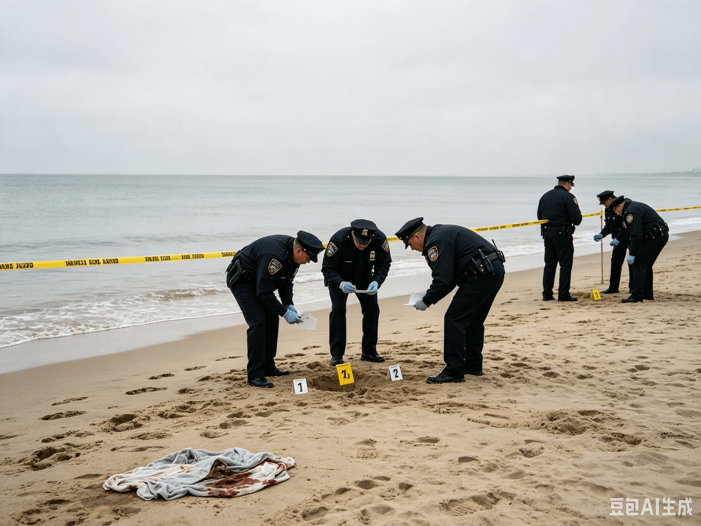

东疆亲海公园发现男性遗体，警方展开调查
发布时间：
2025年9月15日
记者：
陈默
男性遗体于海岸附近被发现
2025年9月12日上午6时20分， 东港警方接到群众报警。
报警人称，在东疆亲海公园东侧海岸附近发现疑似人员遗留物。
警方随后赶往现场，并确认发现一名男性遗体。
死者身份确认
姓名： 赵某
年龄： 24岁
职业： 无
案件经过
根据现场调查以及附近监控资料显示：
2025年9月11日晚21时左右， 赵某曾独自前往东疆亲海公园附近。
随后，其手机信号在附近区域消失。
手机聊天记录调查
警方在调查过程中发现， 赵某手机内保存有部分聊天记录。
记录显示： 赵某生前曾与一名女性保持联系。
聊天内容显示， 2025年9月11日晚， 该女性主动邀请赵某前往：
东疆亲海公园
双方约定在那里见面。
相关人员调查
警方确认， 该女性身份为：
姓名： 林某
年龄： 22岁
目前调查发现， 林某在赵某死亡后也失去联系。
截至目前， 林某仍处于失踪状态。
现场调查情况
警方在现场发现：
- 死者手机
- 随身物品
- 部分个人物品
目前警方正在对现场痕迹进行进一步分析。
现场照片
东疆亲海公园夜间环境。

警方调查现场附近区域。
案件相关物品。
案件疑点
一： 赵某为何在深夜前往东疆亲海公园？
二： 林某为何在案发后失踪？
三： 两人在见面过程中发生了什么？